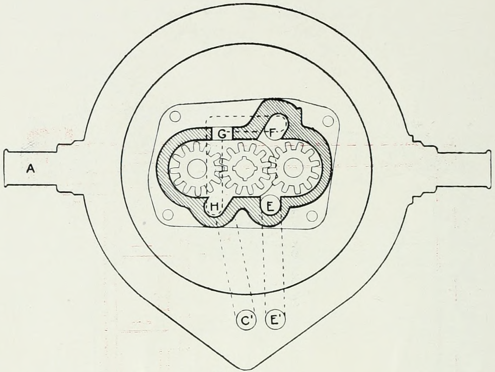
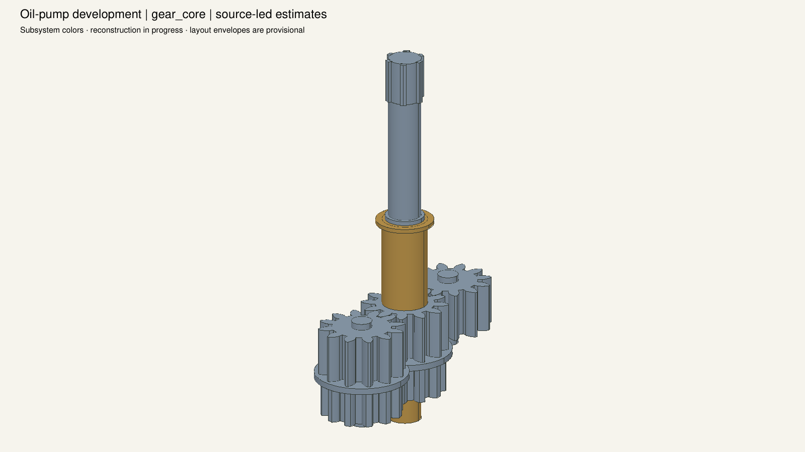
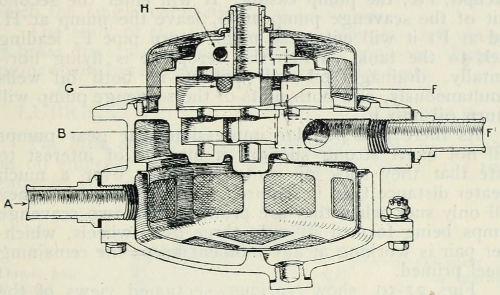
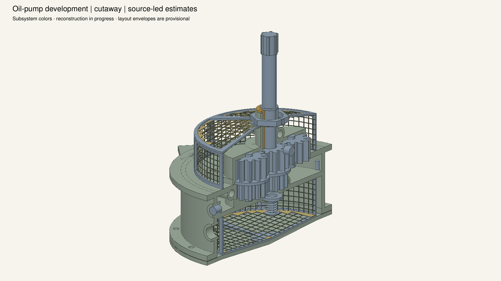
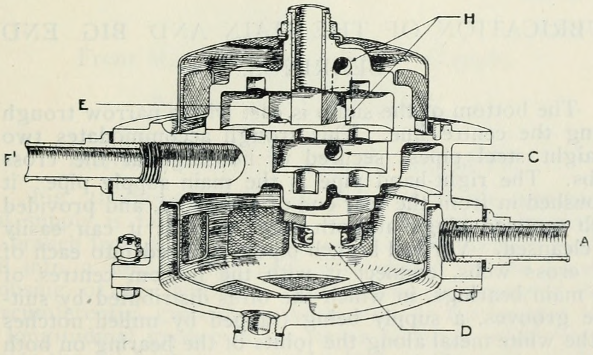
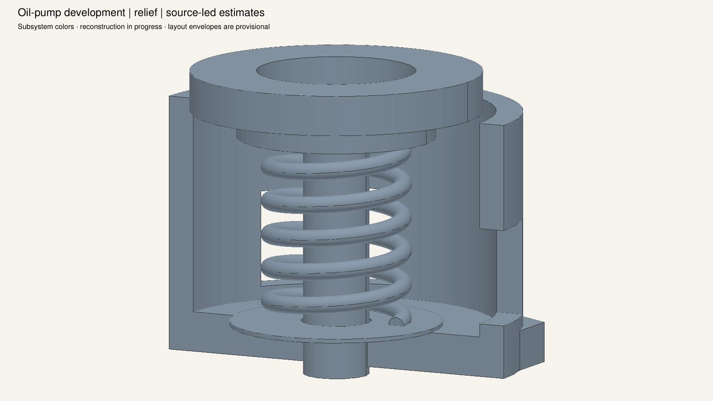
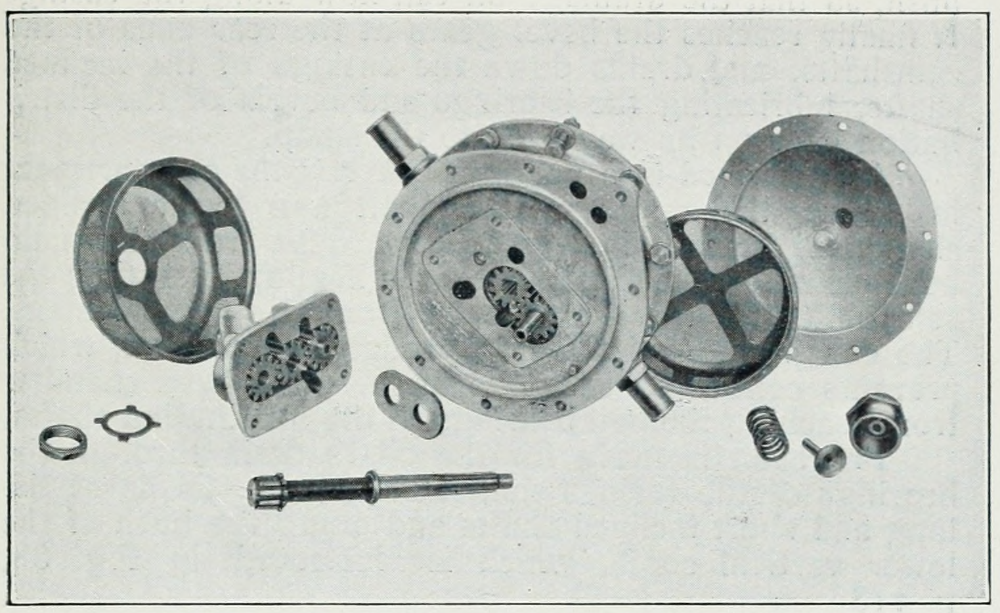
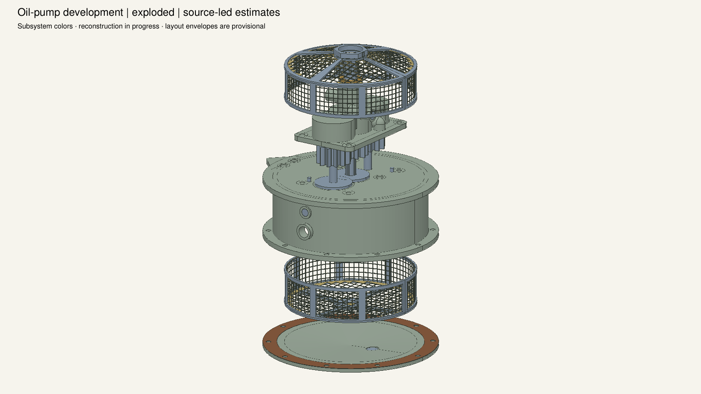
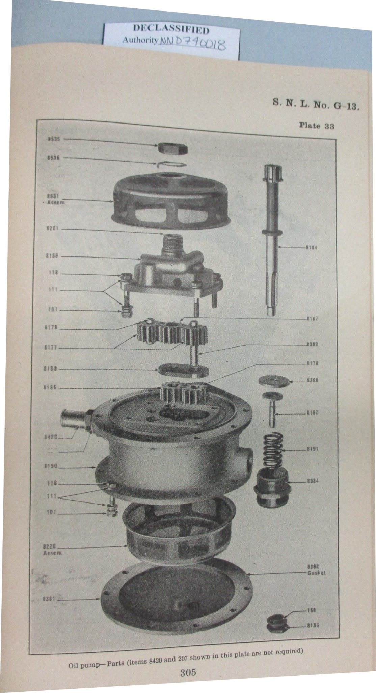
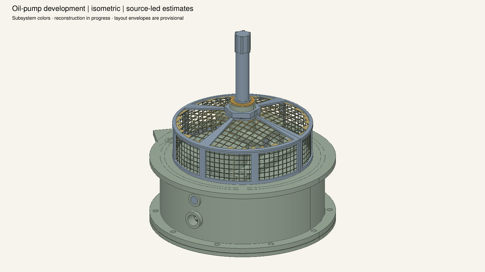

35 constituents; fastening hardware, lock wires, external fitting selection and crankcase installation remain pending. Castings, dimensions, gears and passage routes contain explicit estimates. The separate screens use deliberately coarse open apertures; true gauze weave and filtration rating are unknown. Cutaways and exploded offsets affect display only, and are not service poses. Cameras are not registered to the source figures.









